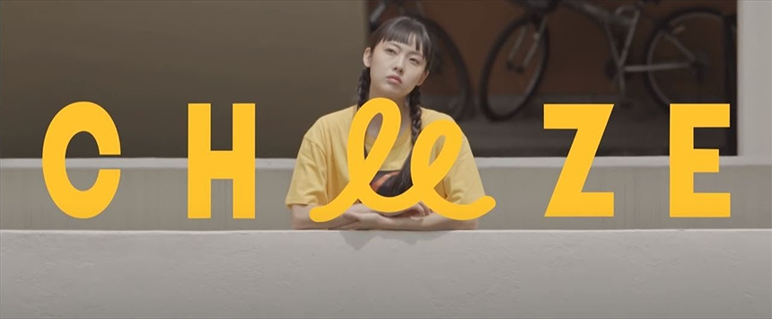
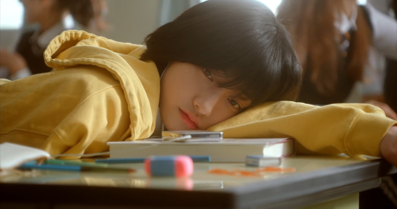
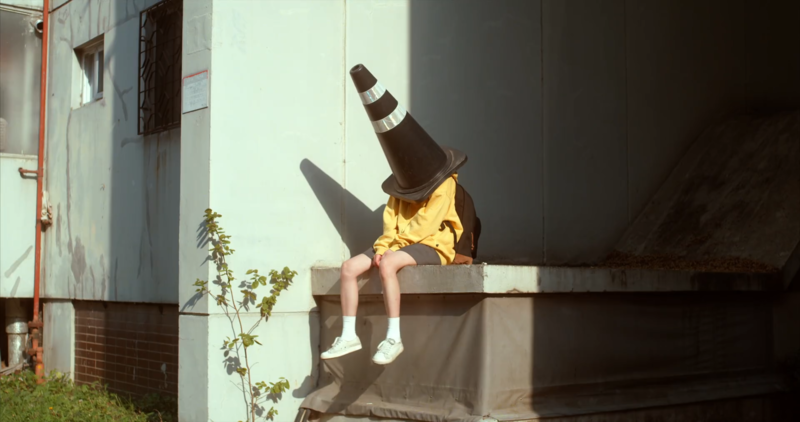
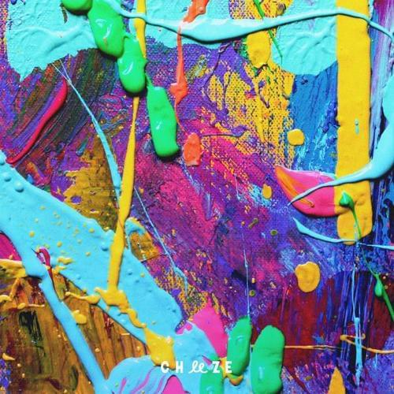
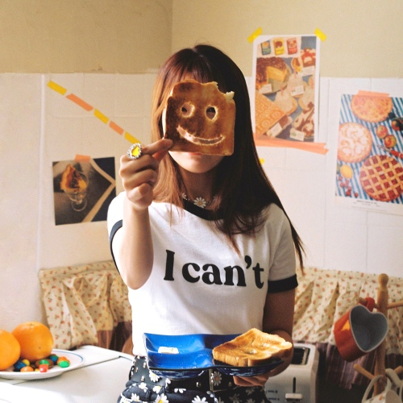

안녕하세요 라보엠입니다.
어제 소개해 드린 강민경 잔나비 최정훈 듀엣의 우린 그렇게 사랑해서 뮤비에 배우 전소니가 출연했었는데요, 또 그녀가 출연했던 좋은 뮤비가 있습니다. CHEEZE 치즈의 어떻게 생각해 인데요, 2016년 발표하며 유튜브에 올라온 이 뮤비는 별다른 홍보 없이도 2024년 현재 1600만 뷰를 기록하고 있습니다.
CHEEZE 치즈 어떻게 생각해 MV
전소니는 이 뮤비에서 치즈의 보컬인 달총의 무심한듯한 목소리에 어울리는 무심한듯한 표정으로 삶의 방향을 잃은 젊은이의 모습을 잘 표현했습니다. 치즈는 현재 달총의 1인 밴드 형식으로 가고 있지만, 전반적인 음악을 만들고 있는 구름의 독특한 음악은 달총의 유니크한 목소리와 너무 잘 어우러져 있습니다. 치즈의 길거리 버스킹을 보면 구름의 재즈 건반 라이브와 달총의 음색이 잘 어울려서 넋을 놓고 보게 됩니다.

CHEEZE 치즈 어떻게 생각해 가사
1.
이른 노을 지던 그 하늘 아래
가로수 길을 따라 걷던 우리들
많은 사람들과 발끝을
부딪치며 걷고 있어
아무 생각 없이 앞만 봤었고
뒤에선 누군가가 쫓아온 듯해
이 많은 사람들은 모두
어디로 가고 있는 걸까
chorus.
어떻게 생각해 어떻게 생각해 넌
어떻게 생각해 어떻게 생각해 넌
난 늘 생각해 난 늘 생각해야 해
이제 그만 지겨워
어떻게 생각해 어떻게 생각해 넌
어떻게 생각해 이렇게 생각해 난
이제 그만 지겨워
2.
그날 넌 기억하니 예전에 우리 꿈을 나누던
그 밤의 놀이터를 마냥 하늘만 보며
결국 잘 될 거라고 얘기했지 oh
chorus.
어떻게 생각해 어떻게 생각해 넌
어떻게 생각해 어떻게 생각해 넌
난 늘 생각해 난 늘 생각해야 해
이제 그만 지겨워
어떻게 생각해 어떻게 생각해 넌
어떻게 생각해 이렇게 생각해 난
이제 그만 지겨워
br.
바보 같던 웃음의 순수했던 날 우리가
오늘도 내일도 매일이 그리워
chorus.
어떻게 생각해 어떻게 생각해 넌
어떻게 생각해 어떻게 생각해 넌
난 늘 생각해 난 늘 생각해야 해
이제 그만 지겨워
어떻게 생각해 어떻게 생각해 넌
어떻게 생각해 이렇게 생각해 난
이제 그만 지겨워
그리고 CHEEZE 치즈의 또 하나의 명곡이 있습니다.
CHEEZE 치즈 오늘의 기분 MV
2000년 5월에 발표한 이 노래도 곧 1,000만 뷰를 앞두고 있습니다. 잘 나간다는 가수들도 쉽지 않은 뷰인데 말이죠. 매일 반복되는 쉽지 않은 오늘의 기분을 주인공 여고생(노윤주)을 통해 표현했습니다. 이어폰을 끼고 에어팟 노래를 실행하자 시간이 멈추고나 장면이 바뀌며 기분 전환하는 장면을 통해, 삶에 기분 전환이 얼마나 필요한지 느낄 수 있습니다. 그리고, 누군가 이 기분을 알아주면 얼마나 좋은 일이 될까요?
 
CHEEZE 치즈 오늘의 기분 가사
1.
이대로 가만히 있어도 될까
지루해 매일 나 책상에 앉아
할 일이 많아
이제는 내가 알게 뭐람
So now 뭐 어때 잠깐이면 돼
잠깐 딴짓만 할게
And I 오늘의 기분만큼만
웃어보면 어떨까요
예보에 오늘의 날씨는
구름 한 점 없이 맑으다 하던데
왜 머리 위 길을 잃은 먹구름들이
가득 드리워진 걸까요
아무도 몰라요
오늘의 기분은
2.
가끔은 시무룩 그런 날도 있지
설레는 바람 방향을 따라가
사뿐히 걷자 이제는 내가 알게 뭐람
So now 어디든
잠깐이면 돼 잠깐 딴짓만 할게
And I 오늘의 기분만큼만
웃어보면 어떨까요
예보에 오늘의 날씨는
구름 한 점 없이 맑으다 하던데
왜 머리 위 길을 잃은 먹구름들이
가득 드리워진 걸까요
아무도 몰라요
오늘의 기분은
br.
까맣게 칠해진 마음들에 별이 뜰 때까지
떠나볼까 기분이 이끄는 대로
예보에 오늘의 날씨는
구름 한 점 없이 맑으다 하던데
왜 머리 위 길을 잃은 먹구름들이
가득 드리워진 걸까요
예보에 내일의 날씨는
아무도 모르게 맑을까 하던데
왜 머리 위 싱그러운 초록빛들이
나를 들뜨게 만들까요
아무도 몰라요
오늘의 기분은
 
구름과 달총의 멋진 음악 CHEEZE 의 노래들 어떻게 생각해, 오늘의 기분 추천 드립니다.